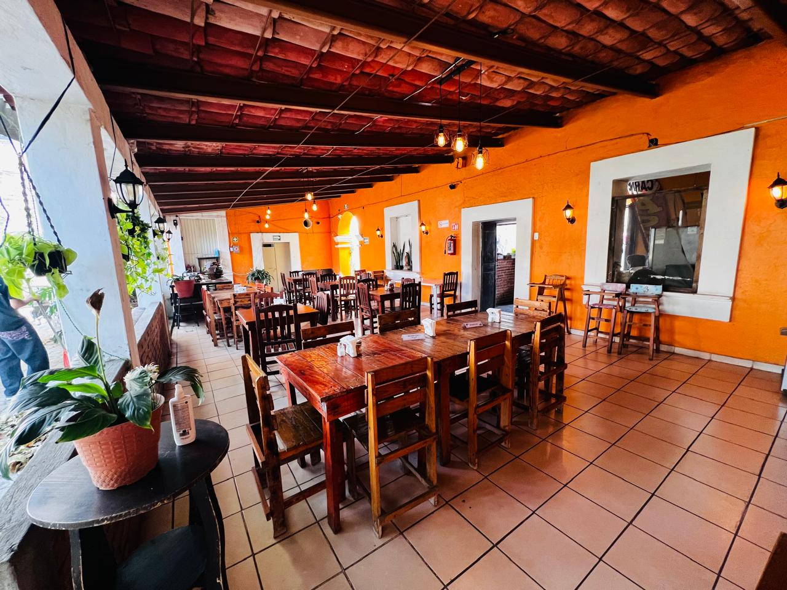
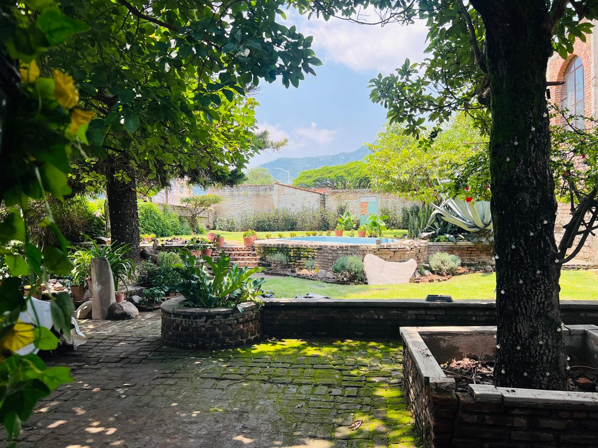

LOS DOS GALLOS
Un lugar para compartir, disfrutar y crear buenos momentos alrededor de la mesa.

NUESTRA ESENCIA
En Los Dos Gallos creemos que una buena comida se disfruta mejor alrededor de una mesa.
Queremos ofrecer un espacio cálido y familiar, donde puedas compartir, disfrutar de la parrilla y pasar un buen momento con las personas que quieres.
NUESTRO ESPACIO
Un ambiente tranquilo donde la naturaleza, la madera y los detalles del lugar forman parte de la experiencia de Los Dos Gallos.

LOS DOS GALLOS